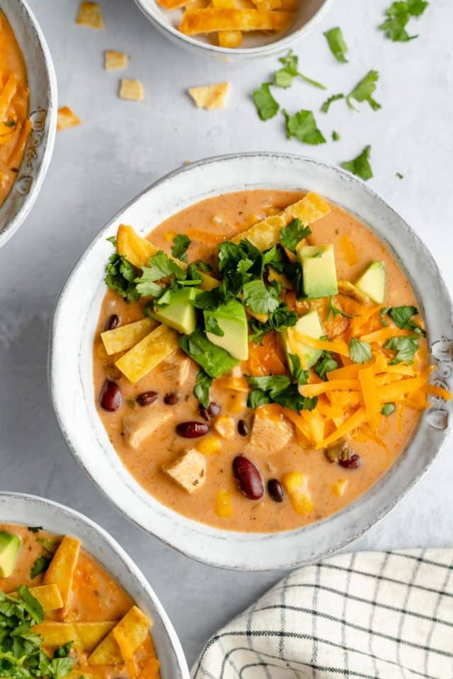

Creamy Chicken Tortilla Soup

A creamy take on this flavorful classic
This Creamy Chicken Tortilla Soup is loaded with tender chicken, corn, beans, fajita seasoning and is simmered in a rich, creamy broth. Finish with your favorite Tex-Mex toppings for an easy one-pot dinner that the whole family will love!
Ingredients
- 1 tablespoon butter or olive oil
- 2 cloves garlic, minced
- 1 small onion, finely chopped
- 2 tablespoons all-purpose flour
- 1 (32 ounce) box chicken broth
- 2 cups (1 pint) half-and-half
- 1 (10.75-ounce) can cream of chicken soup
- 1 cup prepared salsa
- 3-4 cups diced or shredded cooked chicken
- 1 (15-ounce) can black beans, drained and rinsed
- 1 (15-ounce) can kidney beans, drained and rinsed
- 1 (15-ounce) can whole kernel corn, drained
- 2 teaspoons ground cumin
- 1 packet fajita or taco seasoning
Optional Toppings
- Tortilla chips
- Grated cheese
- Sour cream
- Sliced avocado
- Fresh cilantro
Steps
- Heat the butter or oil in a large pot over medium heat. Add the garlic and the onion and sauté until softened, 5 minutes.
- Add the flour and stir well, cooking for 1 minute more. Add the broth and the half-and-half. Stir in the cream of chicken soup, salsa, chicken, beans, corn, cumin and fajita seasoning.
- Simmer over low heat for 15 minutes. Ladle soup into individual bowls and top with crumbled tortilla chips or strips. Sprinkle each serving with cheese and add any other optional toppings. Enjoy!